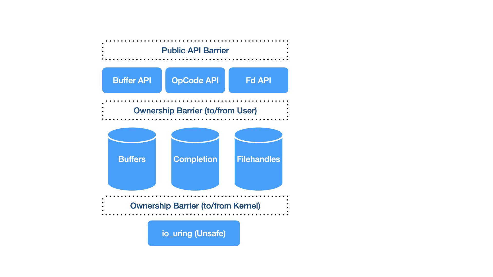

Introduction
yaws io_uring abstracts the underlying low level Linux io_uring library.
We aim too provide safer semantics towards managing all the moving parts given these have complex lifetimes and ownership, typically shared between the kernel, userspace and the user.

Bearer
UringBearer (io-uring-bearer) is the carrier holding all of the io_uring associated generated instances of types.
OpCode
OpCode and OpCode (io-uring-opcode) are the contracts between bearer and individual opcode implementations.
In addition it provides the required extension traits for implementing the individual opcodes.
Ownership
Owner (io-uring-owner) provides the ownership semantics between kernel, userspace and the user.
Filehandles
RegisteredFd and FdKind (io-uring-fd) provides the types representing filehandles within io_uring.
Buffers
UringBuffer (io-uring-buffer) will provide the types representing buffers within io_uring.
Note: As of time writing buffers are still within the bearer but this will change.
Bearer
The crate io-uring-bearer consists of the below main types:
| Type | Description |
|---|---|
| UringBearer | The main carrier type holding all the instaces of Completion, Registered Filehandles & Buffers |
| UringBearerError | The error type for UringBearer |
| BearerCapacityKind | Descriptor used to describe the boundaries of capacities required |
| Completion | The main completion type bringing together all the possible competions |
Associated Built-In Types
The below will be migrated into separate crates, implementing the io-uring-opcode trait later, similar to EpollCtl.
Until then, io-uring-bearer still holds some of the required holding types:
| Holding Type | Description |
|---|---|
| BuffersRec | Holds the actual allocation for the Buffers that either owned by the Kernel or Userspace. |
| FutexRec | futex2(2) -like, Used for FutexWait |
In addition io-uring-bearer still holds some of the individual OpCode Pending / Completion slab types:
| OpCode Type | Description |
|---|---|
| AcceptRec | accept4(2), used for Accept and AcceptMulti |
| FutexWaitRec | Represents FutexWait |
| RecvRec | Represents Recv |
| RecvMultiRec | Represents RecvMulti |
| SendZcRec | Represents SendZc |
Capacity
UringBearer requires bounded capacities described to it.
Leaving things unbounded and without any capacity planning, it would be easy to create opportunities for denial of service, crashes etc. resulting from unbounded capacities at runtime.
All consumers must describe the required capacities through BearerCapacityKind type.
Given that the capacity is described and used at runtime context,
You should test your intended runtime with the described capacity to ensure that the given environment meets it where ever it's deployed in.
Anything that hits the capacity will typically see SlabbableError AtCapacity(setting) variant.
The capacity values are only used when the UringBearer is constructed and are not changeable within it's lifetime after.
See the BearerCapacityKind for an example how to use it along the capacity crate.
Slabbable
See blog which describes the Slabbable trait in general.
Normal Vec etc. would implicitly allocate without warning and invalidate the underlying addresses.
Given that memory addresses need to be kept stable for many things submitted to the io_uring queue,
UringBearer uses Slabbable to back the underlying pending or completed instances of Completion.
Any top-level binary can configure the desired Slabbable implementation through SelectedSlab.
By default the crate currently uses nohash-hasher through HashBrown through slabbable-hash.
Completions
We exploit the fact that Kernel doesn't make any opinion what the userdata should contain for the pending completions by giving each submission a rotating u64 identifier which can then be mapped into the completed type upon completion.
This avoids using any from_raw_parts -like re-construction when we can refer through rotating u64 serial through storage.
We could also use std::mem::forget but we can also model this through the trait giving the option to the user what kind of storage they would like.
Main reason we like to track the items is we that can have some level of ownership / pointer provenance, manage easily any associated data (e.g. regarding the ownership) and more importantly we can construct a gated accessor / barrier to it whilst when for example the kernel has only immutable reference to the said data meaning we can also hold immutable references whilst doing so where as simply forgetting the submitted data.
Not only this but sometimes you might have an arena of buffers (e.g. group of buffers) that are provided to kernel and you must handle the ownership status of window / slice into the part of group of continuous buffers that have been provided back essentially fragmenting the type in some scenarios.
In short, the trait gives us the flexibility and we are able to test that all the implementations uphold the guarantees whilst leaving us easy way to benchmark any possible scenarios through the varying implementation in one go.
OpCode
All io_uring operations or ops are described through their opcodes.
The below opcodes are currently implemented:
| OpCode | Linux Kernel | trait / built-in | Description |
|---|---|---|---|
| Accept | built-in | accept4(2) (single-shot) | |
| EpollCtl | trait impl | Epoll Control | |
| FuteXWait | built-in | Futex Wait | |
| ProvideBuffers | built-in | Register Buffers with Kernel for faster I/O | |
| Recv | built-in | Receive (single-shot) | |
| RecvMulti | built-in | Receive (multi-shot) | |
| SendZc | built-in | Send (Zero Copy) |
All the in-Bearer built-in OpCodes will be moved to implement the associated trait in the future.
All the builti-in & OpCode
To push a bearer-aware submission, use the push_* or push_op_typed methods via the associated UringBearer.
Accept
Accept abstracts the underlying io_uring::opcode::Accept.
This Single-shot Accept provides the source socket address and port within the completion.
If you either don't need the source address and / or port, consider using the AcceptMulti instead.
Note: This is being migrated to implement the OpCode + OpCompletion traits similar to EpollCtl.
Submission
You can currently push single-shot Accept unsafely depending on whether the underlying TcpListener RawFd is IPv4 or IPv6:
To use it safely, user must ensure that the underlying socket is either exclusively IPv4 or IPv6 given the returned source address and structure layout is different depending on which one it is.
If someone needs UNIX sockets, please feel free to send a PR.
Completion
Accept(AcceptRec) will show up as normal through the handler API through UringBearer.
Lifetime (Manual handling)
SubmissionRecordStatus::Forget is safe given the pending Completion was Single-shot.
If the completed record is retained, this will result in memoryleak.
EpollCtl
EpollCtl abstracts the underlying io_uring::opcode::EpollCtl.
You can use io_uring to batch the control calls of Epoll.
For now the separate io-uring-epoll crate also provides a convenient syscall abstraction into epoll_wait which is not yet available through the io_uring interaface over a regular syscall as of now.
If you have millions of sockets that constantly change status, it is helpful to be able to batch the control calls.
See the examples from the io-uring-epoll repository.
Note: io-uring-epoll 0.1 crate is different to 0.2 which implements the new OpCode/Completion traits.
Construct
- Construct associated EpollUringHandler::with_bearer(UringBearer).
- Construct HandledFd representing individual Epoll triggered RawFd
Submission
- Construct EpollCtl::with_epfd_handled(epfd, handle_fd, your_reference)
- Use UringBearer::push_epoll_ctl to push the constructed EpollCtl as submission.
Completion
EpollCtl(impl OpExtEpollCtl) will show up as normal through the handler API through UringBearer.
Lifetime (Manual handling)
You should only Forget the underlying EpollCtl when the RawFd is removed from monitored filehandles list.
Failing to Retain the underlying EpollCtl before removing it will result in undefined behaviour.
FutexWait
FutexWait abstracts the underlying io_uring::opcode::FutexWait.
This can be used, among other use-cases, to combine epoll_wait or other events waiting on another thread with io_uring completions given atomics can be used to generate completion events through FutexWait.
Note: This is being migrated to implement the OpCode + OpCompletion traits similar to EpollCtl.
Construct
You can create the underlying indexed AtomicU32 which will be owned by the UringBearer through:
Alternatively and unsafely you can provide your own AtomicU32 to UringBearer through:
Submission
You can submit a FutexWait through UringBearer::add_futex_wait.
Completion
FutexWait(FutexWaitRec) will show up as normal through the handler API through UringBearer.
Lifetime (Manual handling)
SubmissionRecordStatus::Forget is safe given the pending Completion was Single-shot.
If the completed record is retained, this will result in memoryleak.
ProvideBuffers
ProvideBuffers abstracts the underlying io_uring::opcode::ProvideBuffers.
To do faster I/O it is essential to register (or map) any userspace buffers with the kernel so the kernel can spend less time mapping the userspace buffers between the Recv / Send calls.
Note: This is being migrated to implement the OpCode + OpCompletion traits similar to EpollCtl.
Construct
See the main section about Buffers how to manage these.
Submission
Use the UringBearer::provide_buffers to both submit and associate any created Buffers with kernel-mapped identifiers.
We may later have API to make this more easier to use but for now the user must keep track of the kernel-mapped identifiers.
Completion
ProvideBuffers(ProvideBuffersRec) is provided normally through the handler API via UringBearer.
Lifetime (Manual handling)
The actual buffers are separate from the registering it so the submission can be forgotten after completion safely.
Recv
Single-shot Recv abstracts the underlying io_uring::opcode::Recv.
Note: This is being migrated to implement the OpCode + OpCompletion traits similar to EpollCtl.
Construct
Recv requires a registered filehandle and previously created indexed buffer.
Submission
Use UringBearer::add_recv to submit a Single-shot Recv to kernel.
Completion
Recv(RecvRec) is provided normally through the handler API via UringBearer.
Lifetime (Manual handling)
SubmissionRecordStatus::Forget is safe given the pending Completion was Single-shot.
RecvMulti
RecvMulti abstracts the underlying [io_uring::opcode::RecvMulti](https://docs.rs/io-uring/latest/io_uring/opcode/struct.Recv Multi.html).
Note: This is being migrated to implement the OpCode + OpCompletion traits similar to EpollCtl.
Construct
RecvMulti requires both a registered filehandle and previously registered / kernel-mapped buffer/s with the referred group.
Submission
Use UringBearer::add_recv_multi to submit a RecvMulti to kernel.
Completion
RecvMulti(RecvMultiRec) is provided normally through the handler API via UringBearer.
See Buffers on how to deal with individual "selected buffers" within registered "grouped" Buffers.
Lifetime (Manual handling)
It would be undefined behaviour if the submission record is invalidated before the Multi-shot submission is either confirmed cancelled or timed out.
SendZc
SendZc abstracts the underlying io_uring::opcode::SendZc.
Note: This is being migrated to implement the OpCode + OpCompletion traits similar to EpollCtl.
Construct
Currently SendZc requires the associated indexing (through submission) into:
- registered filehandle (see Filehandles
- registered buffer (see Buffers
- kernel buffer id (see Buffers
Submission
Currently submit using UringBearer::add_send_singlebuf.
Completion
SendZc(SendZcRec) is provided normally through the handler API via UringBearer.
Lifetime (Manual handling)
Extensions
Every OpCode should add:
- It's own separate crate (e.g. io-uring-epoll) and it's own type (e.g. EpollCtl).
- Impl OpCode and OpCompletion from the io-uring-opcode crate.
- Feature-gated "extension" trait within io-uring-opcode similar to OpExtEpollCtl.
- Feature-gated UringBearer::Completion variant, e.g. Completion::EpollCtl within UringBearer.
- Explicit API to push the OpCode as submission, e.g. UringBearer::push_epoll_ctl